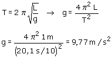

Disgresión previa:
La masa del péndulo la dan para mosquear. El
período de un péndulo no depende de su masa.
También dan para mosquear la separación del hilo de la vertical.
El período tampoco depende de dicha separación, sin embargo
si esta fuera mayor de 14º la oscilación dejaría de ser
armónica y no serviría la única fórmula del
péndulo que nos sabemos

|